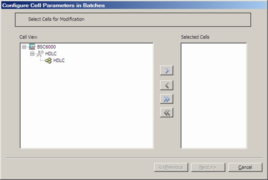
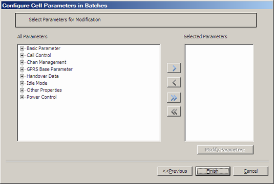
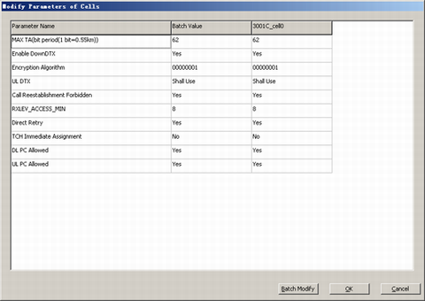

This describes how to modify the optimization parameters of a cell in batches to improve the configuration efficiency.
Prerequisite
Procedure
- Through GUI
- Choose . A dialog box is displayed, as shown in Figure 1.
Figure 1 Configure Cell Parameters in Batches dialog box

- Select cells from the Cell View box and add them to the Selected Cells box, and then click Next. A dialog box is displayed, as shown in Figure 2.
Figure 2 Selecting parameters for modification

- Select parameters from the All Parameters box and add them to the Selected Parameters box, and then click Modify Parameters. A dialog box is displayed, as shown in Figure 3.
Figure 3 Modify Parameters of Cells dialog box

- To modify the batch value of the parameter to be modified in batches, click Batch Modify.
- Click OK to return to the dialog box shown in Figure 2.
- Click Finish.
- Through MML
- You can run the following commands on the Local Maintenance Terminal to configure cell parameters.
- Run the MOD CELLBASICPARA command to modify the basic cell network optimization parameter.
- Run the MOD CELLIDLEBASIC command to modify the basic cell idle parameter.
- Run the MOD CELLIDLEAD command to modify the advanced cell idle parameter.
- Run the MOD CELL2GBA1 command to modify the 2GBA1 table of cell idle parameters.
- Run the MOD CELLCCBASIC command to modify the basic cell call control parameter.
- Run the MOD CELLIDLEFDDBA1 command to modify the FDDBA1 table of cell idle parameters.
- Run the MOD CELLIDLETDDBA1 command to modify the TDDBA1 table of cell idle parameters.
- Run the MOD CELLCCACCESS command to modify the cell call access control parameter.
- Run the MOD CELLCCTMR command to modify the cell call control timer parameter.
- Run the MOD CELLCCAD command to modify the advanced cell call control parameter.
- Run the MOD CELLCCUTRANSYS command to modify the UTRAN system message of the cell call control parameter.
- Run the MOD CELLCCAMR command to modify the cell call control AMR parameter.
- Run the MOD CELLHOCTRL command to modify the cell handover control parameter.
- Run the SET CELLHOAD command to set the cell advanced handover data.
- Run the SET CELLHOIUO command to set the concentric cell handover parameter.
- Run the SET CELLHOFITPEN command to modify the filter and penalty data of cell handover.
- Run the MOD CELLHOEMG command to modify the cell emergency handover parameter.
- Run the MOD CELLHOUTRANFDD command to modify the cell UTRAN FDD handover parameter.
- Run the MOD CELLHOUTRANTDD command to modify the cell UTRAN TDD handover parameter.
- Run the MOD CELLHOFAST command to modify the cell fast handover parameter.
- Run the SET CELLHODBPARA command to set the cell enhanced dual-band network parameter.
- Run the MOD CELLHO2GBA2 command to modify the 2GBA2 table of cell handover parameters.
- Run the MOD CELLHOFDDBA2 command to modify the FDDBA2 table of cell handover parameters.
- Run the MOD CELLPWRBASIC command to modify the basic cell power control parameter.
- Run the MOD CELLPWRHW2 command to modify the advanced cell Huawei second generation power control parameter.
- Run the MOD CELLPWRHW3 command to modify the advanced cell Huawei third generation power control parameter.
- Run the SET CELLCHMGBASIC command to set the basic cell channel management parameter.
- Run the MOD CELLCHMGAD command to modify the advanced cell channel management parameter.
- Run the MOD CELLLCS command to modify the LCS parameter.
- Run the SET CELLSOFT command to set the cell software parameter.
- Run the SET CELLTMR command to modify the cell timer parameter.
- Run the MOD CELLOTHBASIC command to modify the basic parameter.
- Run the MOD CELLCCCH command to modify the common channel control parameter.
- Run the MOD CELLOTHEXT command to modify the other parameters.
- Run the MOD CELLSBC command to modify the cell simplified broadcast parameter.
Copyright © Huawei Technologies Co., Ltd.